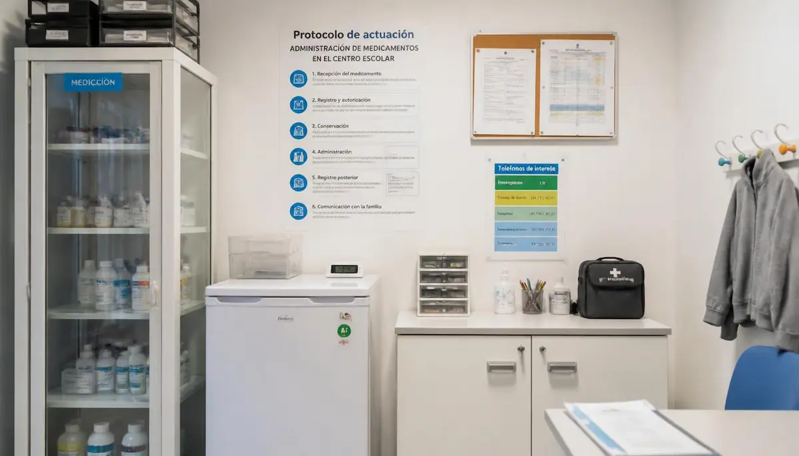

Gestión de la medicación en horario escolar
El tratamiento farmacológico constituye el pilar central en el control de la epilepsia infantil. Si bien una gran parte de los menores realiza sus pautas de medicación exclusivamente en el hogar, aquellos alumnos que requieren fármacos anticonvulsivos diarios en horas lectivas o tratamientos de rescate ante crisis prolongadas precisan de una organización administrativa y clínica rigurosa en colaboración directa con el centro educativo.
Coordinación formal y protocolos médicos autorizados
Para administrar cualquier fármaco en la escuela es indispensable contar con un informe médico oficial emitido por el neuropediatra, la autorización formal firmada por los representantes legales y las pautas claras de actuación que garanticen la seguridad jurídica y sanitaria del personal docente encargado de custodiar el tratamiento de rescate.
"Una gestión organizada y transparente de la medicación en el colegio aporta tranquilidad absoluta a la familia y respaldo clínico al centro."
Organizar los recursos sanitarios con rigor cotidiano
Disponer del tratamiento debidamente etiquetado en un espacio accesible pero seguro, junto con los contactos de urgencia actualizada, asegura una respuesta inmediata y coordinada ante cualquier eventualidad.
➔ Volver al índice de Epilepsia escolar